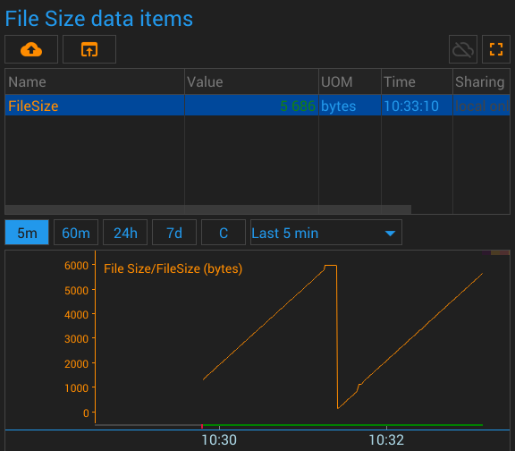
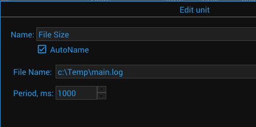

{#header.html#}

{%title=Gazer - Unit - File Size%}
{%description=Gazer - Unit to get file size%}

<h1 class="sensor_name">File Size Unit</h1>

<h2>Description</h2>
<div class="sensor_description">
    The unit writes the file size to the data item.
</div>

<h2>Parameters</h2>
<div class="sensor_parameters">
    <div class="sensor_parameter">
        <div class="sensor_parameter_name">
            File Name
        </div>
        <div class="sensor_parameter_description">
            The absolute path to the file to be monitored
        </div>
    </div>
    <div class="sensor_parameter">
        <div class="sensor_parameter_name">
            Period
        </div>
        <div class="sensor_parameter_description">
            The period between sensor activities
        </div>
    </div>
</div>

<h2>Data Items</h2>
<div class="sensor_parameters">
    <div class="sensor_parameter">
        <div class="sensor_parameter_name">
            FileSize
        </div>
        <div class="sensor_parameter_description">
            Size of the file
        </div>
    </div>

</div>

<h2>Pictures</h2>
<div style="text-align: center">Screenshot</div>

<div style="text-align: center">Configuration</div>


<div class="dark_block" style="text-align: center; margin: 10px;">
    <a href="https://github.com/gazercloud/gazernode/tree/main/system/units/files/unit_filesize" target="_blank">Source code of the unit</a>
</div>


{#bottom.html#}
